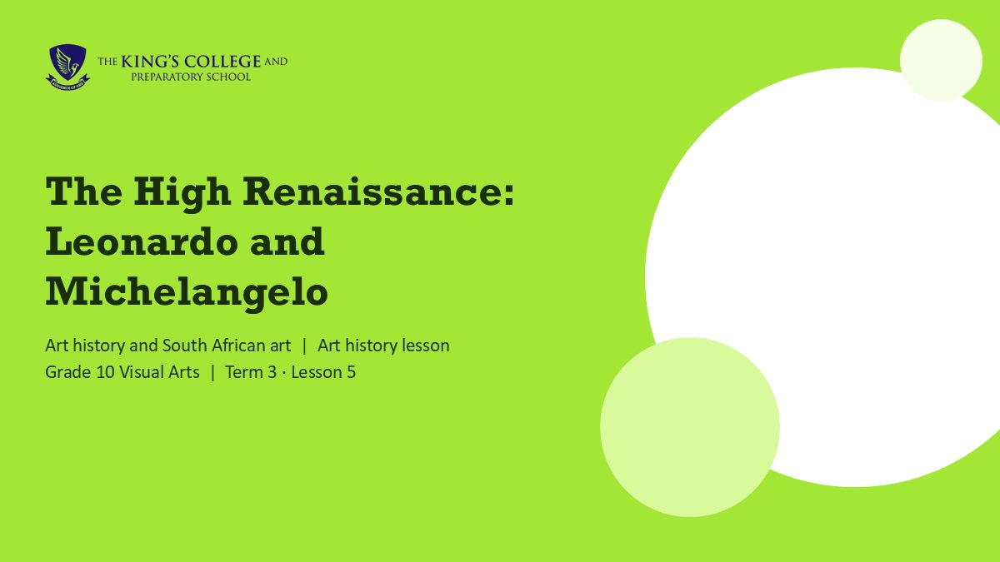

Term 3 · Lesson 5 · Art history lesson
The High Renaissance: Leonardo and Michelangelo
Start Here
Today I Will
- Explain how Leonardo used sfumato and composition
- Describe Michelangelo's David and the Sistine Chapel
- Compare Michelangelo's David with Donatello's David
The same young hero, two great sculptors, about 60 years apart. Would you show David before or after the fight, and why?
Words to Know
| Word | Meaning |
|---|---|
| High Renaissance | The peak of the Renaissance, c. 1490 – 1527, centred on Rome. |
| Sfumato | 'Smoky': soft blending of tones without sharp outlines. |
| Pyramidal composition | Figures arranged in a stable triangle shape. |
| Contrapposto | A natural standing pose with the weight on one leg, so hips and shoulders tilt in opposite directions. |
| Terribilità | The awe-inspiring power associated with Michelangelo's work. |
Slides

Videos
Notes
Leonardo (sfumato, the Last Supper, the Mona Lisa) and Michelangelo (David, the Sistine Chapel).
Leonardo Da Vinci (1452 – 1519)
- Artist and scientist: Painter, engineer and inventor who studied anatomy, water and flight. He saw painting as a science of observation.
- Sfumato: Soft, smoky blending without hard outlines, seen in the Mona Lisa (c. 1503 – 1519) and her misty landscape.
- The Last Supper (c. 1495 – 1498): Jesus says one disciple will betray him. The disciples react in four groups of three; Christ sits calm at the centre.
- Composition: Christ forms a stable triangle, and his head is at the vanishing point, framed by the window.
- A risky experiment: Painted on dry plaster, not true fresco, so it began to flake in Leonardo's own lifetime.
Michelangelo Buonarroti (1475 – 1564)
- Sculptor first: He believed the figure was already hidden in the marble and his task was to free it.
- Pietà (1498 – 1499): Mary holds the dead Christ in a stable pyramid; her calm young face shows quiet grief and faith.
- David (1501 – 1504): Marble, about 5.17 m high. The young hero before the fight, tense and alert, in contrapposto; a symbol of Florence's freedom.
- Sistine Chapel ceiling (1508 – 1512): Fresco for Pope Julius II: scenes from Genesis, including the Creation of Adam, painted from scaffolding.
- The Last Judgement (1536 – 1541): Painted decades later on the altar wall of the same chapel.
Leonardo blended the edges; Michelangelo set the figure free from the stone.
Practical
You need: History booklet, visual journal, Venn diagram
Two Davids Compared
- Label a Venn diagram: Donatello's David (probably 1440s) and Michelangelo's David (1501 – 1504).
- Compare the material and scale: bronze, about 1.58 m, against marble, about 5.17 m.
- Compare the moment shown: after the victory with Goliath's head, or before the fight.
- Compare pose and mood: relaxed or tense? Where is the weight and where do the eyes look?
- In the middle, write what they share: contrapposto, classical ideal, a symbol of Florence.
- Write a short paragraph: which David best expresses courage, and why?
Test Yourself
- Define sfumato and name one work where Leonardo used it.
- Explain how Leonardo leads the eye to Christ in the Last Supper.
- Compare the moment shown in Donatello's and Michelangelo's David.
Show answers
1. Soft blending of tones without hard outlines; the Mona Lisa. 2. The perspective lines meet at Christ's head, the window frames him and he forms a calm triangle among the agitated groups. 3. Donatello shows David after the victory, with Goliath's head at his feet; Michelangelo shows him before the fight, tense and alert.
Finished Early?
Find the stable pyramid in High Renaissance composition.
- Draw a quick thumbnail of the Last Supper or the Pietà from your booklet.
- Draw a triangle over the main figure or group.
- Mark where the eye goes first with a star.
- Write one sentence on how the triangle makes the work feel calm.